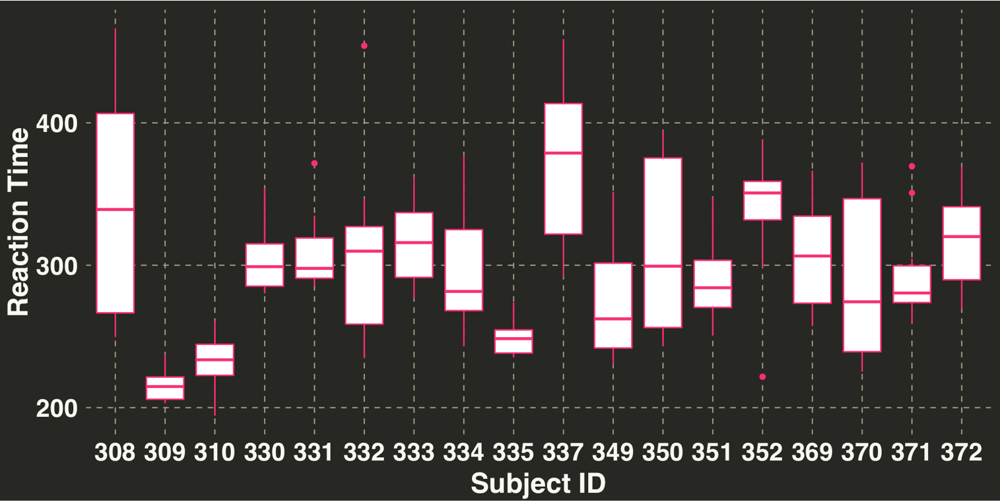
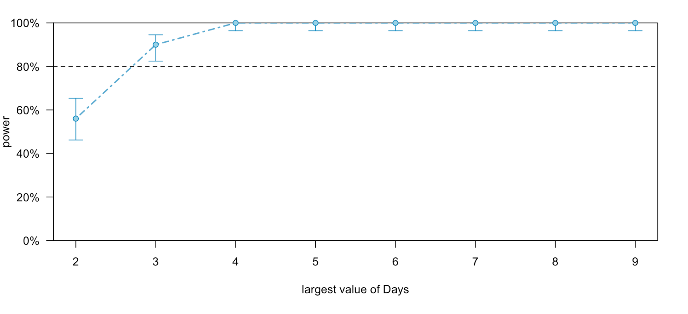

Monte Carlo Power Calculations for Mixed Effects Models
That’s a dense title – Monte Carlo Simulation, Power, Mixed-Effect models. Each of these topics could be their own post. However, I’m going to discuss their interrelations in the context of experimental power and keep everything high-level. The goal is to get an intuitive idea of how we can leverage simulation to provide sample size estimates for experiments with nested data.

- What is Power
- Simulating Power
- A Brief Primer on Random Effects
- Calculating Power for Mixed Effects Models
- Build Your Own Simulator
What is power?
Power is the ability to detect an effect, given that one exists. I’ll illustrate this concept with a simple example. Imagine you are conducting a study on the effects of a weight loss pill. One group receives the experimental weight loss pill while the other receives a placebo. For the pill to be marketable, you want to claim an average loss of 3lbs. This is our effect size. Estimating an effect size can be a bit tricky; you can use history or simply figure out what size of effect you want to see (in this case a difference of 3lbs). Additionally, we’ll have to specify a standard deviation. This can come from similar, previous studies or a pilot study. To keep things simple, let’s say we reviewed some literature on similiar weight loss studies and observed a standard deviation of 8lbs. We’ll also assume that both groups exhibit the same degree of variance. Now that we’ve established our effect size and standard deviation, we need to know how many people to include in the study. If each participant is paid $100 for completing the 1 month study and we have a budget of $10,000, then our sample size can be at most 100 participants, with 50 randomly assigned to the placebo condition and the remaining 50 assigned to the pill condition. Finally we’ll use the conventional significance level of 0.05. So now we have our pieces required to calculate experimental power:
- Effect size & Standard Deviation
- Sample Size
- Significance Level
Let’s illustrate how we would implement the above situation–and calculate power–in R.
library(broom)
library(dplyr)
library(artyfarty)
library(ggplot2)
library(lme4)
library(simr)
sample_size_per_group = 50
desired_effect_size = 3
standard_deviation = 8
alpha = 0.05
expected_power = stats::power.t.test(n = sample_size_per_group,
delta = desired_effect_size,
sd = standard_deviation,
sig.level = alpha,
type = "two.sample",
alternative = "two.sided"
)
print(paste0("EXPECTED POWER IS: ", round(expected_power$power * 100, 0), "%"))
## [1] "EXPECTED POWER IS: 46%"
We have a 46% chance of actually detecting an effect if we ran a study with these exact parameters – an effect that we know exists! That’s pretty low. What would happen if we increased our budget to $20,000 and doubled the number of participants in each group.
sample_size_per_group = 100
desired_effect_size = 3
standard_deviation = 8
alpha = 0.05
expected_power = stats::power.t.test(n = sample_size_per_group,
delta = desired_effect_size,
sd = standard_deviation,
sig.level = alpha,
type = "two.sample",
alternative = "two.sided"
)
print(paste0("EXPECTED POWER IS: ", round(expected_power$power * 100, 0), "%"))
## [1] "EXPECTED POWER IS: 75%"
So our power went up, which makes sense. As we increase our sample size, we become more confident in our ability to estimate the true effect. In the next section I’ll discuss how to obtain these exact results through a simulated experiment.
Simulating Power
If you are like me, I need to know what’s actually going on. The process of calculating power initially seemed a bit mysterious to me. And when things don’t make sense or seem a bit opaque the best way to understand them is to write some code and go line by line to figure out where the numbers come from. So that’s what we’ll do.
Imagine we ran 1000 studies with the parameters outlined above. After each study, we conducted an independent-samples t-test, calculated the p-value, and determined whether it was less than our alpha (0.05). In all the cases where the value was greater than 0.05, we commited a type II error, because we know there is a difference between our two groups. Let’s add up this number, subtract it from 1000, and the total is our power.
set.seed(123)
pvalue_vector = c()
for(i in 1:1000){
type_II_error = NULL
placebo_group_mean = 0
pill_group_mean = -3
placebo_group = rnorm(sample_size_per_group,
mean = placebo_group_mean,
sd = standard_deviation)
pill_group = rnorm(sample_size_per_group,
mean = pill_group_mean,
sd = standard_deviation)
temp_dataframe = data.frame(weight_difference = c(pill_group, placebo_group),
group = c(rep("pill", sample_size_per_group),
rep("placebo", sample_size_per_group)))
temp_p_value = tidy(t.test(weight_difference ~ group,
data = temp_dataframe)$p.value
if(temp_p_value < 0.05){
type_II_error = 0
} else {
type_II_error = 1
}
pvalue_vector = c(pvalue_vector, type_II_error)
}
print(paste0("EXPECTED POWER IS: ", round(100 - sum(pvalue_vector)/1000 * 100, 0), "%"))
## [1] "EXPECTED POWER IS: 76%"
Pretty neat! Our 76% estimate is almost identical to the 75% estimate generated from the built-in power calculator. In the next section we’ll extend these ideas to a class of models referred to as Random Effects.
A Brief Primer on Random Effects
Have you ever ran a study where the things you were studying (e.g., people, animals, plants) were part of a hierarchy? For example, students are part of the same classroom; workers are part of the same company; animals live in the same tree; plants grow on the same plot of land. In each of the instances, the things from the same environment will (presumably) be more like one another than the things from different environments. These are typically referred to as nested data, and we want to account for the fact that there is structure to the variability between the things we are studying.
Calculating Power for Mixed Effects Models
The study we’ll use to illustrate these concepts comes with the lme4 package. Being part of this study sounded pretty terrible, so I hope the participants got some decent compensation. Anyways, here’s the lowdown: 18 truck drivers were limited to three hours of sleep over a period of 10 days. Their reaction times on a series of tests were measured several times a day, and single reaction time measurement was entered for each participant per day. The fixed effect – or the thing we are interested in – was number of days of sleep deprivation. The random effect is the participant. The researchers want to generalize their findings to all people – not just the people included in the study– so differences between participants is of little interest. Thus they want to control for this variability by specifiying a random effect, and ideally get a better idea of how the fixed effect (Number of days of sleep deprivation) impacts reaction time. We’ll keep it simple and use a random effect for the intercept. What this means is that some participants will react faster (slower) than others, regardless of whether they were sleep deprived. We can check the valildity of this assumption with a basic boxplot.
monokai_values = c("#F92672", "#66D9EF", "#A6E22E", "#FD971F")
monokai_line_color = "#A59F85"
my_plot_theme = function(){
font_family = "Helvetica"
font_face = "bold"
return(theme(
axis.text.x = element_text(size = 18, face = font_face, family = font_family),
axis.text.y = element_text(size = 18, face = font_face, family = font_family),
axis.title.x = element_text(size = 20, face = font_face, family = font_family),
axis.title.y = element_text(size = 20, face = font_face, family = font_family),
strip.text.y = element_text(size = 18, face = font_face, family = font_family),
plot.title = element_text(size = 18, face = font_face, family = font_family),
legend.position = "top",
legend.title = element_text(colour = "white", size = 16,
face = font_face,
family = font_family),
legend.text = element_text(colour = "white", size = 14,
face = font_face,
family = font_family)
))
}
sleep_df = lme4::sleepstudy
ggplot(sleep_df, aes(x = factor(Subject), y = Reaction)) + geom_boxplot(color = monokai_values[1]) +
theme_monokai_full() +
my_plot_theme() +
xlab("Subject ID") + ylab("Reaction Time")

If the median of each of our boxplots were approximately equal, then we might be able to get away with a fixed effect or simply not include the subject effect at all. But clearly this isn’t the case. Here is the form of our model
sleep_fit = lmer(Reaction ~ Days + (1|Subject), data = sleep_df)
print(summary(sleep_fit))
Linear mixed model fit by REML ['lmerMod']
Formula: Reaction ~ Days + (1 | Subject)
Data: sleep_df
REML criterion at convergence: 1786.5
Scaled residuals:
Min 1Q Median 3Q Max
-3.2257 -0.5529 0.0109 0.5188 4.2506
Random effects:
Groups Name Variance Std.Dev.
Subject (Intercept) 1378.2 37.12
Residual 960.5 30.99
Number of obs: 180, groups: Subject, 18
Fixed effects:
Estimate Std. Error t value
(Intercept) 251.4051 9.7467 25.79
Days 10.4673 0.8042 13.02
Correlation of Fixed Effects:
(Intr)
Days -0.371
And given these inputs, here is the power (if we were to repeat the experiment exactly).
nsim = 25
sleep_sim = powerSim(sleep_fit, nsim = nsim)
print(sleep_sim)
This appears to be an "observed power" calculationPower for predictor 'Days', (95% confidence interval):
100.0% (86.28, 100.0)
Test: Kenward Roger (package pbkrtest)
Effect size for Days is 10.
Based on 25 simulations, (0 warnings, 0 errors)
alpha = 0.05, nrow = 180
Time elapsed: 0 h 0 m 5 s
nb: result might be an observed power calculation
This indicates that we are all but guranteed to detect an effect if we run the study with 18 participants for a period of 10 days. The folks who did this study obviously wanted to leave nothing to chance! What if we tried to replicate the study with the same conditions but for fewer days than 10. How would our power change if we only ran the study for 2 or 3 days? We’ll use the powerCurve function to deteremine how the number of days affects our power. I’m going to use the default settings except change the number of simulations to 100 (from 1000).
nsim = 100
power_curve <- powerCurve(sleep_fit, nsim = nsim)
print(plot(power_curve))

It looks like 3 days would’ve been sufficient to achieve at least 80% power, which is just a convention similiar to p < 0.05. I was really excited after using this package because of its ability to fit many different model specifications. The only issue was that I wasn’t entirely clear on the underlying process being used to determine power. According the tutorial from the authors (see here), there are three steps involved in calculating power via simulation:
- Simulate new values for the response variable using the model provided
- refit the model to the simulated response
- apply a statistical test fo the simulated fit.
It was that first part where I wasn’t entirly clear on, so I decided to build my own from scratch and comapre the results.
Build Your Own Simulator
We established our model above as Reaction ~ Days + (1|Subject). So what do they mean by “simulate new values for the response variable”? The new values will be those produced by our model plus error associated with sampling. That second part is thing we are going to simulate. We will assume that are independent randomly distributed residuals are normally distributed, with a mean of zero and a standard deviation of…and a standard deviation of…aww shit how do we come up with this number? We can initially start with the residuals from our model and use that as the standard deviation. Here’s how we’ll do it:
set.seed(123)
type_II_vec = c()
n_simulations = 100
# Step 1: make predictions from our model based on the original data
model_predictions <- predict(sleep_fit, sleep_df)
# Step 2: Calculate our standard deviation based on the residuals from our initial model
standard_deviation = sd(sleep_fit@resp$y - sleep_fit@resp$mu)
for(i in 1:n_simulations){
# Step 3: Simulate our sampling error
temporary_residuals = rnorm(nrow(sleep_df), mean = 0, sd = standard_deviation)
# Step 4: Save Simualted Response values
sleep_df$Simulated_Reaction <- model_predictions + temporary_residuals
# Step 5: refit the model with the new, simulated response variable
temp_fit = lmer(Simulated_Reaction ~ Days + (1|Subject), data = sleep_df)
# Step 6: Calculate a confidence interval for each of the parameters in our model
temp_confint = tidy(confint(temp_fit))
# Step 7: Check to see if confidence interval for the Days coefficient contains zero
ci_df = tidy(confint(temp_fit)) %>%
dplyr::rename(coefficients = .rownames,
lower_bound = X2.5..,
upper_bound = X97.5..) %>%
dplyr::filter(coefficients == 'Days') %>%
dplyr::select(lower_bound, upper_bound)
# Step 8: If Confidence interval contains zero, store as 1 (Type II error), else return store zero
type_II_vec = c(type_II_vec, as.integer(dplyr::between(0, ci_df$lower_bound, ci_df$upper_bound)))
}
In the next step we’ll sum up the number of Type II errors. Based on results from simr, we should have somewhere between 0 and 4 samples where the Days coefficient isn’t significant
print(paste0("EXPECTED POWER IS: ", n_simulations - sum(type_II_vec), "%"))
[1] "EXPECTED POWER IS: 100%"
Exactly what we expected. What would happen if we reduced the number of days in our study to two? The simr package said our power would be right around 50%. Of our 50 simulations, will we commit a type II error in approximately half of them?
set.seed(123)
sleep_df_3day = sleep_df %>%
dplyr::filter(Days %in% c(0, 1, 2))
sleep_fit_3day = lmer(Reaction ~ Days + (1|Subject), data = sleep_df_3day)
type_II_vec = c()
n_simulations = 100
model_predictions = predict(sleep_fit_3day, sleep_df_3day)
standard_deviation = sd(sleep_fit_3day@resp$y - sleep_fit_3day@resp$mu)
for(i in 1:n_simulations){
temporary_residuals <- rnorm(nrow(sleep_df_3day), mean = 0, sd = standard_deviation)
sleep_df_3day$Simulated_Reaction <- model_predictions + temporary_residuals
temp_fit <- lmer(Simulated_Reaction ~ Days + (1|Subject), data = sleep_df_3day)
temp_confint <- tidy(confint(temp_fit))
ci_df = tidy(confint(temp_fit)) %>%
dplyr::rename(coefficients = .rownames,
lower_bound = X2.5..,
upper_bound = X97.5..) %>%
dplyr::filter(coefficients == 'Days') %>%
dplyr::select(lower_bound, upper_bound)
# If Confidence interval contains zero, store as 1 (Type II error), else return store zero
type_II_vec = c(type_II_vec, as.integer(dplyr::between(0, ci_df$lower_bound, ci_df$upper_bound)))
}
print(paste0("EXPECTED POWER IS: ", n_simulations - sum(type_II_vec), "%"))
[1] "EXPECTED POWER IS: 44%"
So there you have it – our simulation obtained similar results relative to the simr package. If we increased the number of simulations, the power estimates would converge to the same number. However, if you copied this code and ran it in R, you’ll notice that it ran pretty slow. In a seperate post I’ll show you how to speed up any simulation by executing the entire process in parallel in order to run more simulations and get better estimates! Stay tuned!